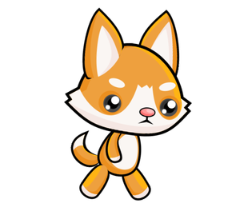
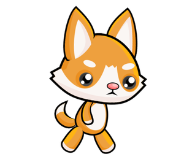

How to make an animation¶
A simple way to get an animation is to place the part of a program that draws one frame in a separate function. As a rule, we will call this function new_frame in programs, though it may have any other name.
Altering the drawings¶
In order to get an animation, the function that draws a frame has to create a drawing slightly different from the previous one on the next call, since without changes there is no animation. For the new drawing to be different, the drawing itself must depend on the values of some variables. Changing the values of the variables on which the drawing depends will result in a different drawing.
For example, here’s how we can create a program that alternately displays a smaller and a larger heart.

The function uses the image_index variable, which only gets values 0 or 1. This variable is used as the index (sequence number) of an image in the image list, which consists of two images. Based on the variable image_index, the program decides which of the two images will be displayed. With each new execution of the new_frame function, the variable image_index changes the value (if it was 0, it gets a value of 1 and vice versa), thus changing the image to be displayed.
The variables on which the drawing depends are said to describe the scene. There can be one or more such variables. In the example with the heart, the scene is described by one variable, which is the variable image_index.
In the general case, when creating a new animation frame, we use the old values of scene-describing variables to calculate their new values. In doing so, new values may or may not be different from old ones. We call this computation a scene update.
Global variables¶
To be able to update a scene in the new_frame function, variables describing the scene have need to have values before and after executing the new_frame function. Therefore, we need to form these variables (assign them the first values) in the main part of the program. When we use such variables in a function, we call them global variables. In contrast, variables made in the function itself are called local variables, and they exist only during function execution.
When assigning values to a global variable in a function, we should indicate at the beginning of the function that these are variables that already exist and are formed outside that function. For the variable image_index in the example above, we achieved this by writing global image_index in the first row of the function. If we did not declare the variable global, Python would attempt to form a new local variable of the same name when assigning a value to the variable.
When there are multiple global variables that we intend to modify in a function, after the word global we should list the names of all such variables, separated by commas.
Animation speed¶
Animation speed is determined by the duration of each frame, that is, the number of frames displayed in a unit of time. To indicate rate at which consecutive frames appear we use the abbreviation (also unit of measurement) fps - frames per second. When creating an animation, one of the things we need to do is choose the speed of rendering and set it in our program as the number of frames that we want the program to create and display per second.
In the previous program, we used 2 frames per second to get a rhythm similar to the heart rate. In doing so, we have clearly distinguished two frames that appear alternately. To get the impression of movement we only need higher speeds and more images.
Commonly at least 15 fps are used for motion animation, because at slower rendering speeds movement can seem intermittent. For example, TV shows generally use 24 fps, and nowadays, video games under 30 fps are not considered to provide a good enough experience. Even faster animations can provide even better effects for some viewers, but those are also more expensive to create and render.
If we set a very high speed in our programs, it may not be possible for our computer to achieve such a speed of image generation, nor such a speed of display. In this case, no errors will occur, but the actual (effective) frame rate will be smaller (one that the computer can achieve).
The animation of running from the introductory text can be achieved with a program very similar to the heart example. The only fundamental difference is that it uses a larger number of images (eight instead of two) and a higher frame rate.
 



Try different frame rates and see how that parameter affects the appearance of the animation. Of course, apart from the number of frames per second, the overall experience is also affected by how much consecutive images differ (more images with smaller differences give a better effect, but it requires a higher frame rate).
Let’s summarize what you need to do to create an animation:
define global variables that describe the scene (this data will change during the animation);
define a function
new_framethat updates the data about characters and objects in the scene, and then plot the scene (remember to list the global variables being modified in the function after the wordglobal);at the end of the program, call the
petljapg.frame_loop(fps, new_frame)function, where fps is the desired frame rate. The frame_loop function, in addition to everything wait_loop did, also calls the new_frame function a requested number of times per second. That is why in animations we will end programs with frame_loop instead of wait_loop.
Animations - questions¶
-
Link the duration of the frame to the number of frames per second.
Try again!
- 10 fps
- 100 milliseconds
- 20 fps
- 50 milliseconds
- 50 fps
- 20 milliseconds
- 100 fps
- 10 milliseconds

{kind=link}
{kind=link}
Task - suggestion: If you like, try creating a Python program that will cyclically display your selected photos or other images of your choice (if all your pictures are the same size, you have already learned everything you need). Keep in mind that frame rate may be less than 1 fps and may not be an integer (but should be positive). For example, in the “slideshow” program we suggest, there is a natural need for each image to last longer than one second.
To display each frame for two seconds, how many frames per second should be set in the program?
- image_index = image_index + 1 % num_images
- Try again
- image_index = (image_index % num_images) + 1
- Try again
- image_index = (image_index + 1) % num_images
- Correct
- image_index = image_index % (num_images + 1)
- Try again
Q-72: In the “Running” example, it was required that the variable image_index cyclically take only those values that correspond to the positions of the images in the list. When we have eight images, these values are 0, 1, 2, 3, 4, 5, 6, 7, 0, 1, 2, etc. In the general case, for n images these values are 0, 1, 2, … n-1, 0, 1, 2, etc.
Recall that the operator % denotes the operation of calculating the remainder after division. With this operation, we can achieve the same goal in shorter notation. Which of the following commands can equally replace this part of the program?
image_index = image_index + 1 # move on to the next picture if image_index == num_images: # if there is no next picture ... image_index = 0 # return to the first picture